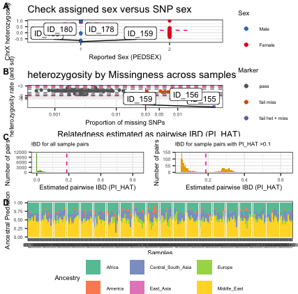
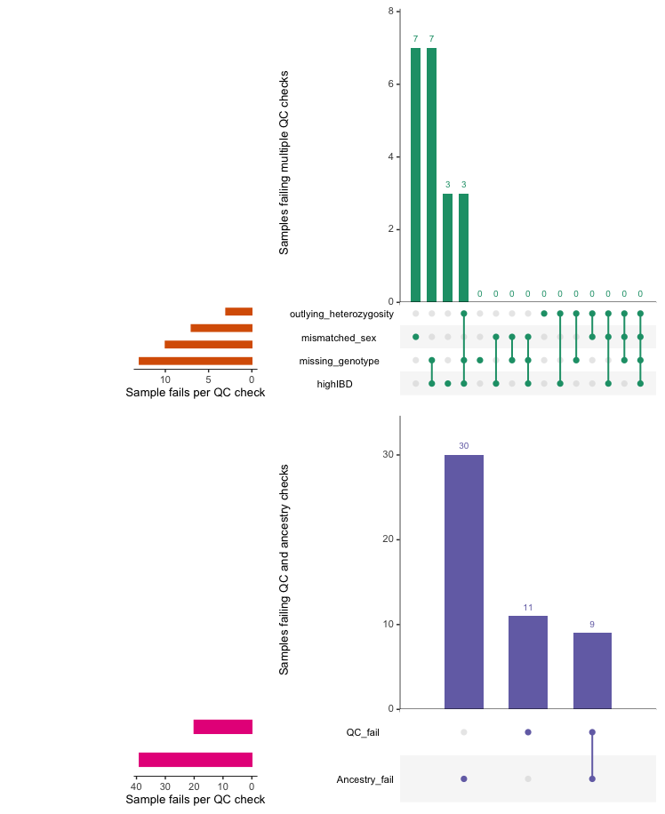
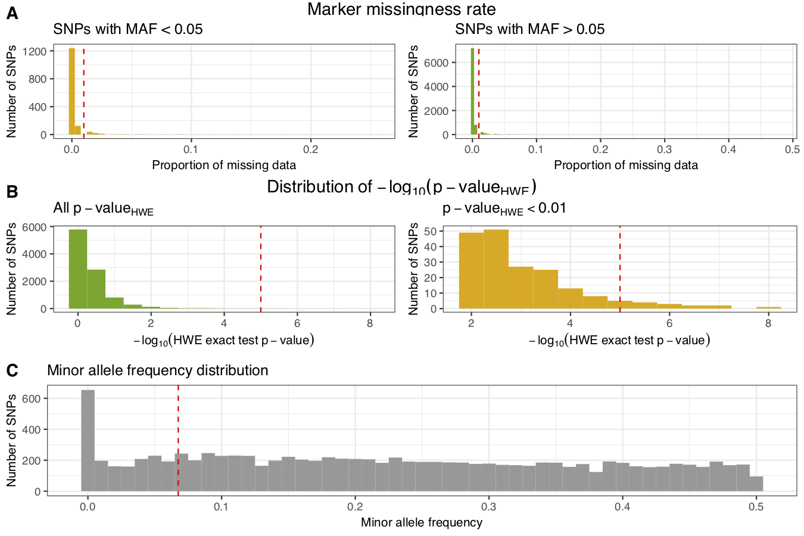
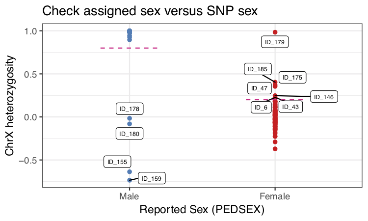
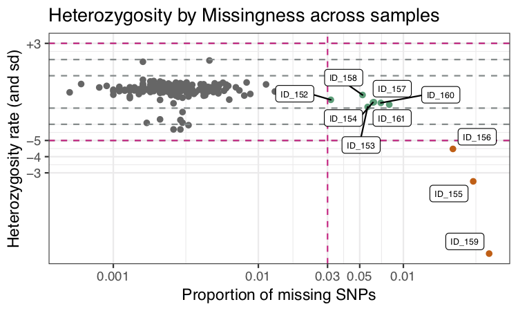
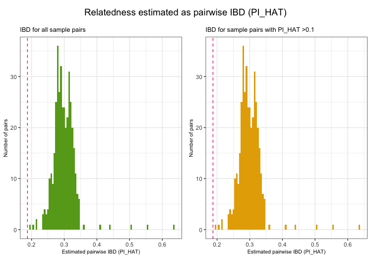
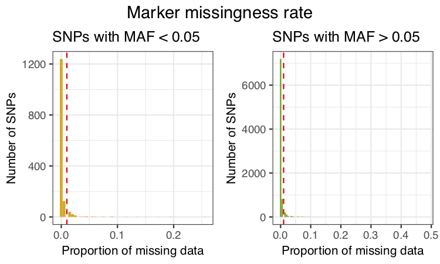
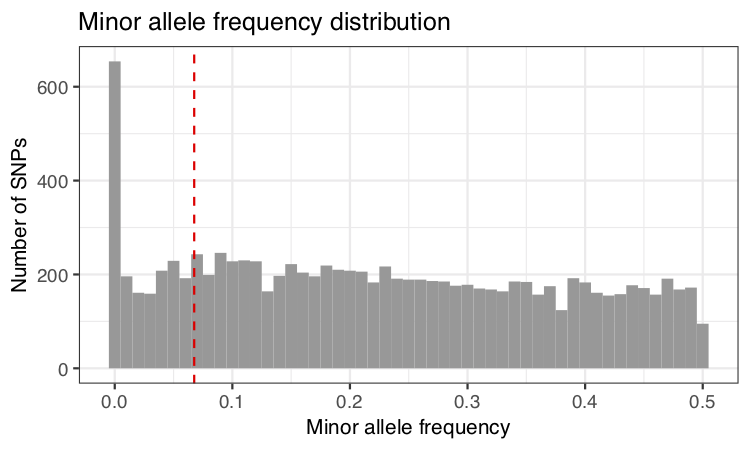

Genotype quality control with plinkQC
Hannah Meyer and Maha Syed
2025-11-20
Source:vignettes/plinkQC.Rmd
plinkQC.RmdIntroduction
Genotyping arrays enable the direct measurement of an individuals genotype at thousands of markers. Subsequent analyses such as genome-wide association studies rely on the high quality of these marker genotypes.
Anderson and colleagues introduced a protocol for data quality
control in genetic association studies heavily based on the summary
statistics and relatedness estimation functions in the PLINK software
[1]. PLINK is a comprehensive, open-source
command-line tool for genome-wide association studies (GWAS) and
population genetics research [3]. It’s
main functionalities include data management, computing individual- and
marker- level summary statistics, identity-by-state estimation and
association analysis.
Integration with R is achieved through its R plugin or PLINK/SEQ R
Package [4]. While the plugin is limited
to operations yielding simple genetic marker vectors as output, the
PLINK/SEQ R Package is limited in the functionalities it can access.
plinkQC facilitates genotype quality control for genetic association studies as described by [1]. It wraps around plink basic statistics (e.g. missing genotyping rates per individual, allele frequencies per genetic marker) and relationship functions and generates a per-individual and per-marker quality control report. Individuals and markers that fail the quality control can subsequently be removed with plinkQC to generate a new, clean dataset. Removal of individuals based on relationship status is optimised to retain as many individuals as possible in the study.
The majority if the functions in plinkQC depends on the PLINK (version 1.9), which has to be manually installed prior to the usage of plinkQC. The ancestry functions depends on the newer version of PLINK 2.0 (version 2.0). It assumes the genotype have already been determined from the original probe intensity data of the genotype array and is available in plink format.
The protocol is implemented in four main functions, the
per-individual quality control (perIndividualQC), the
per-marker quality control (perMarkerQC). the generation of
the new, quality control dataset (cleanData), and the
prediction of human genetic ancestry
(superpop_classification):
Per-individual quality control
The per-individual quality control with perIndividualQC
wraps around these functions: (i) check_sex: for the
identification of individuals with discordant sex information, (ii)
check_heterozygosity_and_missingness: for the
identification of individuals with outlying missing genotype and/or
heterozygosity rates, (iii) check_relatedness: for the
identification of related individuals (iv)
ancestry_prediction: for prediction of genomic ancestry
Per-marker quality control
The per-marker quality control with perMarkerQC wraps
around these functions: (i) check_snp_missingnes: for the
identifying markers with excessive missing genotype rates, (ii)
check_hwe: for the identifying markers showing a
significant deviation from Hardy-Weinberg equilibrium (HWE), (iii)
check_maf: for the removal of markers with low minor allele
frequency (MAF).
Workflow
In the following, genotype quality control with plinkQC is
applied on a small example dataset with 200 individuals and 10,000
markers (provided with this package). The quality control is
demonstrated in three easy steps, per-individual and per-marker quality
control followed by the generation of the new dataset. In addition, the
functionality of each of the functions underlying
perMarkerQC and perIndividualQC is
demonstrated at the end of this vignette.
To run the ancestry functionality of the package, Plink v2 is needed. Before use, the study data should be in the new hg38 annotation. USCS’s liftOver tool may be needed to map variants from one annotation to another. More details on how to use the tool can be found on the processing HapMap III reference data vignette. We provide an example dataset that is in the hg38 annotation.
Additional loading matrices are needed for the PCA projection used in the model. This is hosted on the plinkQC github repo under the inst/extdata folder located here. Alternatively, the whole github repo can downloaded with
The name of the files (before the .acount or .eigenvec.allele) for
the loading matrices must be included in the path2load_mat
variable.
package.dir <- find.package('plinkQC')
indir <- file.path(package.dir, 'extdata')
qcdir <- tempdir()
name <- 'data.hg38'
path2plink <- "/Users/syed/bin/plink"
path2plink2 <- "/Users/syed/bin/plink2"
path2load_mat <- "path/to/load_mat/merged_chrs.postQC.train.pca"Per-individual quality control
For perIndividualQC, one simply specifies the directory
where the data is stored (qcdir) and the prefix of the plink files
(i.e. prefix.bim, prefix.bed, prefix.fam). Per default, all quality
control checks will be conducted.
In addition to running each check, perIndividualQC
writes a list of all fail individual IDs to the qcdir. These IDs will be
removed in the computation of the perMarkerQC. If the list
is not present, perMarkerQC will send a message about
conducting the quality control on the entire dataset.
The ancestry portion of the package requires that the data should be
in PLINK 2.0 format (i.e pgen, pvar, psam files), and the variants
identifiers should be formatted similar to the following example:
1:12345[hg38]. perIndividualQC will run the functions
convert_to_plink2() and
rename_variant_identifiers() to convert the data into PLINK
2.0 format and rename the variant identifiers respectively.
NB: To reduce the data size of the example data in
plinkQC, data.genome has already been reduced to the
individuals that are related. Thus the relatedness plots in C only show
counts for related individuals only. For ancestry identification, there
are 597 SNPs that overlap between the study and reference data, roughly
0.2% of the reference dataset. Thus, additional noise is expected and
visible in the plot below.
perIndividualQC displays the results of the quality
control steps in a multi-panel plot.
fail_individuals <- perIndividualQC(indir=indir, qcdir=qcdir, name=name,
path2plink=path2plink,
interactive=TRUE, verbose=TRUE)
overviewperIndividualQC depicts overview plots of
quality control failures and the intersection of quality control
failures.
overview_individuals <- overviewPerIndividualQC(fail_individuals,
interactive=TRUE)
Per-marker quality control
perMarkerQC applies its checks to data in the specified
directory (qcdir), starting with the specified prefix of the plink files
(i.e. prefix.bim, prefix.bed, prefix.fam). Optionally, the user can
specify different thresholds for the quality control checks and which
check to conduct. Per default, all quality control checks will be
conducted. perMarkerQC displays the results of the QC step
in a multi-panel plot.
fail_markers <- perMarkerQC(indir=indir, qcdir=qcdir, name=name,
path2plink=path2plink,
verbose=TRUE, interactive=TRUE,
showPlinkOutput=FALSE)
overviewPerMarkerQC depicts an overview of the marker
quality control failures and their overlaps.
overview_marker <- overviewPerMarkerQC(fail_markers, interactive=TRUE)
Create QC-ed dataset
After checking results of the per-individual and per-marker quality
control, individuals and markers that fail the chosen criteria can
automatically be removed from the dataset with cleanData,
resulting in the new dataset qcdir/data.clean.bed,qcdir/data.clean.bim,
qcdir/data.clean.fam. For convenience, cleanData returns a
list of all individuals in the study split into keep and remove
individuals.
Ids <- cleanData(indir=indir, qcdir=qcdir, name=name, path2plink=path2plink,
verbose=TRUE, showPlinkOutput=FALSE)Step-by-step
Individuals with discordant sex information
The identification of individuals with discordant sex information
helps to detect sample mix-ups and samples with very poor genotyping
rates. For each sample, the homozygosity rates across all X-chromosomal
genetic markers are computed and compared with the expected rates
(typically $<$0.2 for females and $>$0.8 for males). For samples
where the assigned sex (PEDSEX in the .fam file) contradicts the sex
inferred from the homozygosity rates (SNPSEX), it should be checked that
the sex was correctly recorded (genotyping often occurs at different
locations as phenotyping and misrecording might occur). Samples with
discordant sex information that is not accounted for should be removed
from the study. Identifying individuals with discordant sex information
is implemented in check_sex. It finds individuals whose
SNPSEX != PEDSEX. Optionally, an extra data.frame with sample IDs and
sex can be provided to double check if external and PEDSEX data (often
processed at different centers) match. If a mismatch between PEDSEX and
SNPSEX was detected, by SNPSEX == Sex, PEDSEX of these individuals can
optionally be updated. check_sex depicts the X-chromosomal
heterozygosity (SNPSEX) of the samples split by their (PEDSEX).
fail_sex <- check_sex(indir=indir, qcdir=qcdir, name=name, interactive=TRUE,
verbose=TRUE, path2plink=path2plink)
Individuals with outlying missing genotype and/or heterozygosity rates
The identification of individuals with outlying missing genotype
and/or heterozygosity rates helps to detect samples with poor DNA
quality and/or concentration that should be excluded from the study.
Typically, individuals with more than 3-7% of their genotype calls
missing are removed. Outlying heterozygosity rates are judged relative
to the overall heterozygosity rates in the study, and individuals whose
rates are more than a few standard deviations (sd) from the mean
heterozygosity rate are removed. A typical quality control for outlying
heterozygosity rates would remove individuals who are three sd away from
the mean rate. Identifying related individuals with outlying missing
genotype and/or heterozygosity rates is implemented in
check_het_and_miss. It finds individuals that have
genotyping and heterozygosity rates that fail the set thresholds and
depicts the results as a scatter plot with the samples’ missingness
rates on x-axis and their heterozygosity rates on the y-axis.
fail_het_imiss <- check_het_and_miss(indir=indir, qcdir=qcdir, name=name,
interactive=TRUE, path2plink=path2plink)
Related individuals
Depending on the future use of the genotypes, it might required to
remove any related individuals from the study. Related individuals can
be identified by their proportion of shared alleles at the genotyped
markers (identity by descend, IBD). Standardly, individuals with
second-degree relatedness or higher will be excluded. Identifying
related individuals is implemented in check_relatedness. It
finds pairs of samples whose proportion of IBD is larger than the
specified highIBDTh. Subsequently, for pairs of individual that do not
have additional relatives in the dataset, the individual with the
greater genotype missingness rate is selected and returned as the
individual failing the relatedness check. For more complex family
structures, the unrelated individuals per family are selected (e.g. in a
parents-offspring trio, the offspring will be marked as fail, while the
parents will be kept in the analysis).
NB: To reduce the data size of the example data in
plinkQC, data.genome has already been reduced to the
individuals that are related. Thus the relatedness plots in C only show
counts for related individuals only.
exclude_relatedness <- check_relatedness(indir=indir, qcdir=qcdir, name=name,
interactive=TRUE,
path2plink=path2plink)
Ancestry Predictions of Data
For ancestry estimation, accessory functions from Plink v2 are needed, as are pre-computed loading matrices for the PCA projection used in the model. These are hosted on the plinkQC github repo under the inst/extdata folder located here. Alternatively, the whole github repo can downloaded with
For this, it is important that the data is in hg38 annotation. USCS’s liftOver tool may be needed to map variants from one annotation to another. More details on how to use the tool can be found on the processing HapMap III reference data vignette.
Additionally, the ancestry prediction function requires that the data
is in plink 2 format and has variant identifiers in the format:
1:12345[hg38]. The function ancestry_prediction will call
helper functions, convert_to_plink2() and
rename_variant_identifiers() to format the data as directed
by the parameters. The function returns: (i) prediction_prob: Dataframe
of family ids, sample ids, and model probability of the each ancestry.
(ii) prediction_majority: Dataframe of family ids, sample ids, and
ancestry with highest model probability. (iii) exclude_ancestry: A list
of ids to be excluded based on user-inputted ancestries to the ancestral
predictions of the samples (iv) p_ancestry: Bar graph of the ancestry
model probabilities.
path2plink2 <- "/Users/syed/bin/plink2"
path2load_mat <- "path/to/load_mat/merged_chrs.postQC.train.pca"
anc_check <- ancestry_prediction(indir=indir, qcdir=qcdir, name=name,
interactive=TRUE,
path2plink2=path2plink2,
path2load_mat = path2load_mat)
Markers with excessive missingness rate
Markers with excessive missingness rate are removed as they are
considered unreliable. Typically, thresholds for marker exclusion based
on missingness range from 1%-5%. Identifying markers with high
missingness rates is implemented in snp_missingness. It
calculates the rates of missing genotype calls and frequency for all
variants in the individuals that passed the
perIndividualQC.
fail_snpmissing <- check_snp_missingness(indir=indir, qcdir=qcdir, name=name,
interactive=TRUE,
path2plink=path2plink,
showPlinkOutput=FALSE)
Markers with deviation from HWE
Markers with strong deviation from HWE might be indicative of
genotyping or genotype-calling errors. As serious genotyping errors
often yield very low p-values (in the order of
),
it is recommended to choose a reasonably low threshold to avoid
filtering too many variants (that might have slight, non-critical
deviations). Identifying markers with deviation from HWE is implemented
in check_hwe. It calculates the observed and expected
heterozygote frequencies per SNP in the individuals that passed the
perIndividualQC and computes the deviation of the
frequencies from Hardy-Weinberg equilibrium (HWE) by HWE exact test.
fail_hwe <- check_hwe(indir=indir, qcdir=qcdir, name=name, interactive=TRUE,
path2plink=path2plink, showPlinkOutput=FALSE)
Markers with low minor allele frequency
Markers with low minor allele count are often removed as the actual
genotype calling (via the calling algorithm) is very difficult due to
the small sizes of the heterozygote and rare-homozygote clusters.
Identifying markers with low minor allele count is implemented in
check_maf. It calculates the minor allele frequencies for
all variants in the individuals that passed the
perIndividualQC.
fail_maf <- check_maf(indir=indir, qcdir=qcdir, name=name, interactive=TRUE,
path2plink=path2plink, showPlinkOutput=FALSE)